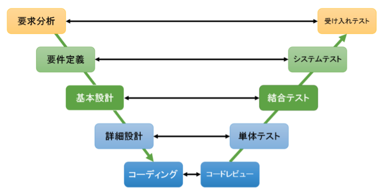

V字モデル¶
V字モデルは、ソフトウェア開発工程とテスト工程の対応関係をV字型で示すモデルである。 ウォーターフォール型開発の流れを視覚的に整理したもので、要件定義から設計、実装、テスト、リリースまでの一連の工程と、それぞれの検証工程との対応が明確になる。 V字の左側に上流工程（要件定義、基本設計、詳細設計など）、右側に対応するテスト工程が並ぶ構造を持つ。 たとえば要件定義の成果物はシステムテストで検証し、基本設計は結合テスト、詳細設計は単体テストで確認する。 最終的にはユーザーによる受入テストが行われ、ユーザーの要求を満たしていることを確認する。 こうした対応関係を設計段階から明示することで、検証計画や品質担保の抜け漏れを防ぐことが目的となる。
 V字モデルとは？
V字モデルおよび一般的な開発工程で用いられる主要な用語を以下に整理する。 特に「要望」「要求」「要件」は混同しやすいため、粒度と性質を明確に分けて定義する。
区分 |
主な意味・目的 |
内容 |
粒度・性質 |
具体イメージ |
自動販売機の例 |
|---|---|---|---|---|---|
要望 |
Why（目的・理由） |
顧客やユーザーが実現したい理想や希望 |
抽象的・理想的 |
「使いやすいシステムにしたい」 |
「誰でも簡単に飲み物を買えるようにしたい」「24時間稼働で収益を上げたい」 |
要求 |
What（実現すべきこと） |
必ず実現すべき条件や期待事項の一覧 |
抽象的だが必須 |
「処理時間を現行比30%短縮する」 |
「コイン・紙幣・電子マネーに対応」「1日100本販売できる容量」「災害時に無料提供」 |
要件 |
What（具体的な条件） |
システムが満たすべき具体的・測定可能な条件 |
定量的・合意済み |
「レスポンスタイムは3秒以内」 |
「硬貨：10円/50円/100円対応」「電子マネーは交通系IC対応」「温度は5〜8℃」 |
基本設計 |
How（外部からの振る舞い） |
システムが外部からどう見えるか、振る舞いの仕様 |
機能や画面単位の仕様 |
「画面レイアウトや入力項目」 |
「商品一覧画面」「決済完了後に商品排出」「LEDランプで通知」「エラーメッセージ表示」 |
詳細設計 |
How（内部での処理方法） |
実装に必要な構造・ロジック |
モジュール・クラス単位 |
「クラス設計」「DB設計」「処理ロジック」 |
「コイン選別回路」「冷却制御アルゴリズム」「電子マネー処理シーケンス」 |
要望¶
要望とは、ユーザーや顧客が「こうしたい」「こんなことが実現できればいい」と望んでいる事柄を指す。
いわば顧客の中にある希望や理想（あるべき姿）であり、表現は抽象的で実現可能性を考慮しない段階のものが多い。 重要な点として、要望＝必ず実現すべき項目ではないことに注意が必要。 後の要求定義・要件定義のプロセスで、プロジェクトのスコープや優先度に応じて取捨選択や具体化が行われる。
要求¶
要求とは、要望の中から「プロジェクトで必ず実現しなければならない」と合意された条件や機能の一覧を指す。
ユーザー側の期待事項のうち、実現に向けて開発チームと顧客が合意した「必須要件」。 ここでは要望より一歩踏み込んで、システムに求める能力や特性を定性的に記述する。 例えば「処理時間を現在より30%短縮すること」や「全てのデータを保存できるようにすること」のように、プロジェクトで実現を約束された条件が文書化される。 要求仕様はユーザー企業内で調整・合意された上で策定されるため、この段階の文書（要求定義書など）は顧客側の正式な期待事項となる。
要件¶
要件とは、要求で合意された事項を踏まえて、システムや成果物が最終的に満たすべき具体的条件を測定可能な指標で文書化したもの。
要求を漏れなく具体化し、曖昧さを排除した上で、システムで実現するために必要な観点（機能面・性能面など）を盛り込んだもの。
要件定義書には主に以下の内容が整理される。
業務要件: 業務プロセスやビジネスルールなど、システム化する範囲の業務上の要請事項
機能要件: 実装する機能の一覧とその振る舞い（どの入力に対しどのような出力を行うか等）
非機能要件: 性能・信頼性・可用性・セキュリティ・拡張性など、システムの品質特性に関する条件
要件は定量的・測定可能な形で記述されるため、後工程の設計・テストにおいて受入基準となる。 要件定義書は顧客と開発ベンダーの公式な合意文書であり、以降の基本設計・詳細設計・テストはこの要件を満たすことを軸に進められる。
（※補足: 英語圏では「要求」も「要件」も両方とも Requirements（要求事項）と呼ぶのが一般的）
基本設計（外部設計・外部仕様・仕様）¶
基本設計とは、要件で定義された事項を実現するために、システムが外部からどう見えるか（振る舞い）を定義する工程
ユーザーや他システムとのインタフェースに関わる部分の設計であり、「外部設計」や単に「仕様策定」とも呼ばれる。 具体的には画面レイアウトや入力項目、表示メッセージ、外部システムとのI/F（インタフェース）定義、主要なアルゴリズムの概要など、ユーザーまたは他システムから見た挙動を定義する。
ここでは要件で決まった必要条件をどのように実現するかを機能単位で落とし込む。 ポイントは、基本設計書に記載される内容はシステムの振る舞い(What)の仕様であり、実装方法そのもの(How)ではないという点。 例えば「〇〇画面では▲▲項目を入力し、入力エラー時には～～というメッセージを表示する」「APIのリクエスト/レスポンス形式をJSONで定義し、フィールドは以下の通りとする」等、ユーザー視点の仕様を定める。
基本設計の成果物は後続の結合テストにおいて、実装が仕様どおり動作しているかを確認するための基準ともなる。
詳細設計（内部設計・内部仕様）¶
詳細設計とは、基本設計で決定したシステムの振る舞いを内部でどのように実装するかを定義する工程
プログラミングに先立ち、システム内部のアーキテクチャやモジュール構成、データ構造、アルゴリズムの詳細などを全て設計する、いわば実装者のための設計図。
具体的にはクラス設計（クラス図やメソッドの設計）、データベース設計（テーブルスキーマやインデックス設計）、各モジュール間のインタフェース、処理手順を記載した擬似コードなど、開発者がコードを書き始めるために必要な情報を詳細に定めます。